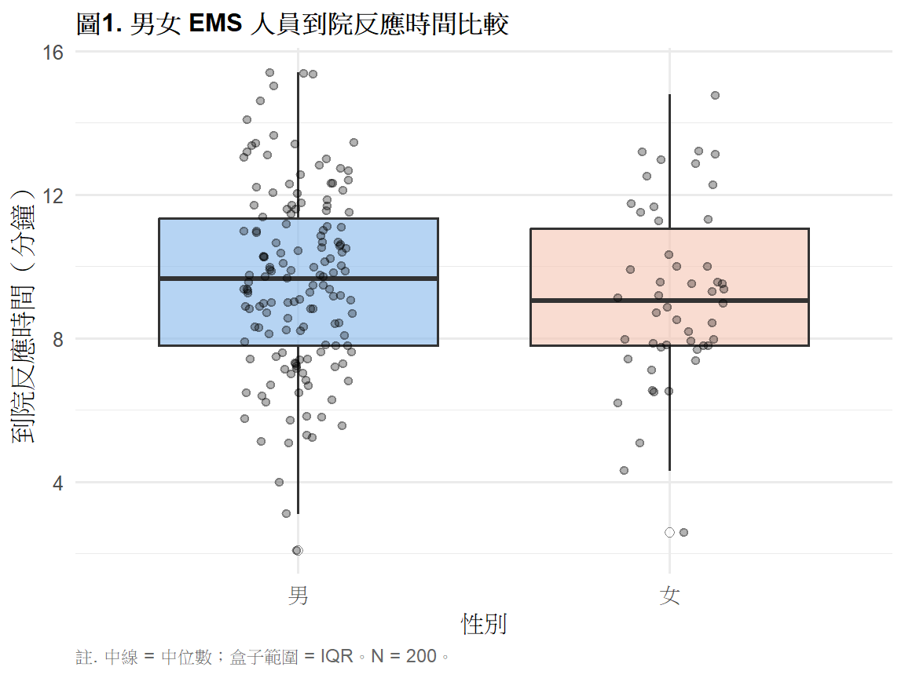
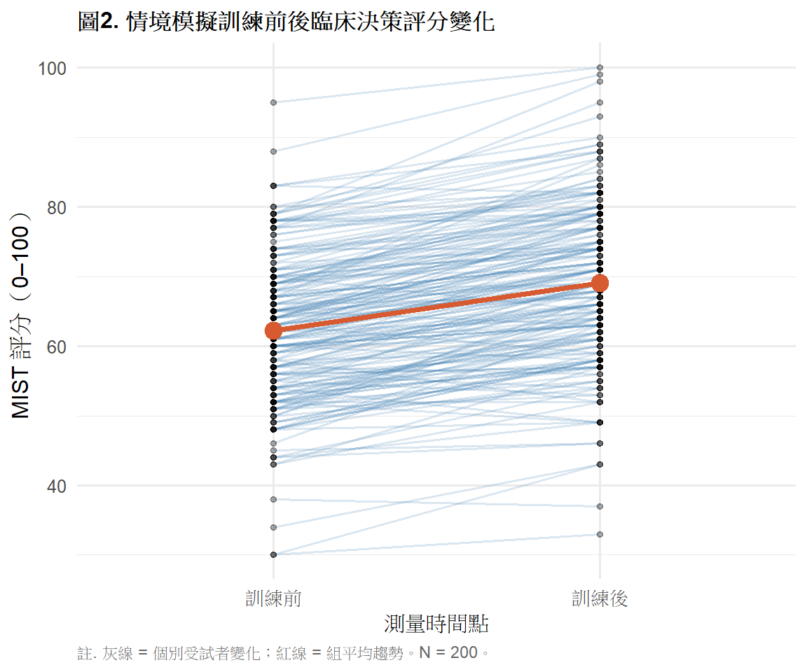

library(tidyverse)
library(gt)
library(effectsize)
# install.packages("effectsize")
ems <- read.csv("data/ems_main.csv",
fileEncoding = "UTF-8",
stringsAsFactors = FALSE)
ems$gender <- factor(ems$gender,
levels = c("男", "女"))
ems$level <- factor(ems$level,
levels = c("EMT-1", "EMT-2", "EMT-P"))
ems$district <- factor(ems$district,
levels = c("北部", "中部", "南部", "東部"))
ems$shift <- factor(ems$shift,
levels = c("日班為主", "夜班為主", "輪班"))第6週：獨立樣本 t 檢定與成對 t 檢定
統計理論、假設檢查、R 實作、APA 報告
本週學習目標
- 理解 t 檢定的統計邏輯與公式推導
- 正確區分獨立樣本與成對樣本設計
- 執行假設檢查並選擇適當的 t 檢定
- 製作 APA 格式結果表格與報告句
統計方法對照表（本週位置）
| X 自變項 | Y 依變項 | 方法 | 無母數替代 |
|---|---|---|---|
| 類別（2組，獨立） | 連續 | 獨立樣本 t 檢定 | Mann-Whitney U（第8週） |
| 類別（2組，配對） | 連續 | 成對 t 檢定 | Wilcoxon signed-rank（第8週） |
註釋
選錯設計是最嚴重的錯誤——用獨立 t 分析配對資料， 或反過來，都會得到錯誤的結論。 設計判斷要在收集資料前就決定好。
一、統計理論
1.1 為什麼需要 t 檢定？
當我們想比較兩組的平均數是否有差異， 最直覺的做法是計算兩組均值的差（x̄₁ − x̄₂）。 但這個差值本身不能告訴我們「差異是真實的還是抽樣誤差造成的」。
t 檢定的核心邏輯是：把觀察到的組間差距， 除以這個差距在抽樣誤差下的自然波動量（標準誤差）， 得到一個標準化的距離，也就是 t 統計量。
\[t = \frac{\text{信號}}{\text{噪音}} = \frac{\bar{x}_1 - \bar{x}_2}{SE}\]
t 值越大 → 兩組差距相對於抽樣誤差越大 → 越不像偶然發生。
1.2 獨立樣本 t 檢定
\[t = \frac{\bar{x}_1 - \bar{x}_2}{\sqrt{s_1^2/n_1 + s_2^2/n_2}}\]
Welch t 檢定（R 預設）不假設兩組方差相等， 自由度會被校正（非整數是正常的）：
\[df = \frac{(s_1^2/n_1 + s_2^2/n_2)^2} {(s_1^2/n_1)^2/(n_1-1) + (s_2^2/n_2)^2/(n_2-1)}\]
提示
實務建議： R 的 t.test() 預設就是 Welch t 檢定 （var.equal = FALSE），在方差相等或不相等時都表現良好， 直接用即可，不需要先做 Levene’s test 再決定。
1.3 成對 t 檢定
成對 t 的本質是對差值 d 做單樣本 t 檢定：
\[d_i = x_{\text{後},i} - x_{\text{前},i}\]
\[t = \frac{\bar{d}}{s_d / \sqrt{n}}, \quad df = n - 1\]
為什麼成對設計統計效力更高？
獨立 t 的分母 SE 包含兩組人員間的個體差異。 成對 t 改為分析每個人自己的前後差值， 個體差異已在相減時消去，SE 更小 → t 值更大 → 更容易偵測效果。
1.4 獨立 t vs 成對 t 比較
| 面向 | 獨立樣本 t | 成對 t |
|---|---|---|
| 資料結構 | 兩組不同受試者 | 同一批受試者兩次測量 |
| 分析單位 | 兩組各自的觀察值 | 每對的差值 d |
| t 公式 | (x̄₁ − x̄₂) / SE₁₂ | d̄ / (s_d / √n) |
| df | n₁ + n₂ − 2（Welch 有校正） | n − 1 |
| 優勢 | 設計簡單 | 消除個體差異，效力更高 |
| EMS 例子 | ALS 組 vs BLS 組反應時間 | 訓練前後 MIST 評分 |
1.5 使用前提
| 假設 | 說明 | 檢驗方式 |
|---|---|---|
| 常態性 | 依變項（或差值）在各組內近似常態 | Shapiro-Wilk；Q-Q plot |
| 獨立性 | 兩組樣本互相獨立 | 設計層面判斷 |
| 方差同質性 | 僅 Student’s t 需要 | Levene’s test（Welch 不需要） |
重要
n ≥ 30 時： 中央極限定理保證樣本平均數近似常態， 即使原始資料偏態，t 檢定仍然有效。 Shapiro-Wilk 仍建議執行，但結果可以更寬鬆判斷。
1.6 效果量：Cohen’s d
\[d = \frac{\bar{x}_1 - \bar{x}_2}{s_p}\]
其中 \(s_p\) 是合併標準差（pooled SD）。
| |d| 範圍 | 強度 |
|---|---|
| 0.20–0.49 | 小效果 |
| 0.50–0.79 | 中效果 |
| ≥ 0.80 | 大效果 |
二、分析流程
Step 1：確認設計（獨立 or 配對？）
↓
Step 2：描述統計 + 盒鬚圖
↓
Step 3：常態性檢定（Shapiro-Wilk）
↓
Step 4：執行 t 檢定（Welch 預設）
↓
Step 5：計算效果量（Cohen's d）
↓
Step 6：APA 格式報告三、R 實作
載入套件與資料
獨立樣本 t 檢定
情境： 比較男性與女性 EMS 人員的平均到院反應時間是否有顯著差異。
圖1. 描述性統計盒鬚圖
ggplot(ems, aes(x = gender, y = response_time,
fill = gender)) +
geom_boxplot(alpha = 0.6,
outlier.shape = 21,
outlier.fill = "white",
outlier.size = 2) +
geom_jitter(width = 0.15, alpha = 0.3, size = 1.5) +
scale_fill_manual(
values = c("男" = "#85B7EB", "女" = "#F5C4B3")
) +
labs(
title = "圖1. 男女 EMS 人員到院反應時間比較",
x = "性別",
y = "到院反應時間（分鐘）",
caption = "註. 中線 = 中位數；盒子範圍 = IQR。N = 200。"
) +
theme_minimal(base_size = 12) +
theme(
plot.title = element_text(face = "bold", size = 12),
legend.position = "none",
plot.caption = element_text(hjust = 0, size = 9,
color = "gray40")
)
表1. 各組描述統計
ems |>
group_by(gender) |>
summarise(
n = n(),
Mean = round(mean(response_time), 2),
SD = round(sd(response_time), 2),
Median = round(median(response_time), 2),
Q1 = round(quantile(response_time, 0.25), 2),
Q3 = round(quantile(response_time, 0.75), 2),
.groups = "drop"
) |>
rename(性別 = gender) |>
gt() |>
tab_header(
title = "表1. 男女 EMS 人員到院反應時間描述統計"
) |>
tab_spanner(
label = "集中趨勢",
columns = c(Mean, Median)
) |>
tab_spanner(
label = "四分位數",
columns = c(Q1, Q3)
) |>
tab_source_note(
source_note = "註. 單位：分鐘。"
) |>
cols_align(align = "center", columns = -性別) |>
cols_align(align = "left", columns = 性別) |>
tab_style(
style = cell_text(weight = "bold"),
locations = cells_column_labels()
) |>
tab_style(
style = cell_text(weight = "bold"),
locations = cells_column_spanners()
) |>
tab_options(
table.border.top.style = "hidden",
heading.border.bottom.style = "solid",
column_labels.border.top.style = "solid",
column_labels.border.bottom.style = "solid",
table.border.bottom.style = "solid",
table.font.size = px(13),
heading.title.font.size = px(14),
heading.align = "left"
)| 表1. 男女 EMS 人員到院反應時間描述統計 | ||||||
| 性別 | n |
集中趨勢
|
SD |
四分位數
|
||
|---|---|---|---|---|---|---|
| Mean | Median | Q1 | Q3 | |||
| 男 | 150 | 9.58 | 9.65 | 2.53 | 7.8 | 11.35 |
| 女 | 50 | 9.20 | 9.05 | 2.48 | 7.8 | 11.05 |
| 註. 單位：分鐘。 | ||||||
常態性檢定
sw_m <- shapiro.test(ems$response_time[ems$gender == "男"])
sw_f <- shapiro.test(ems$response_time[ems$gender == "女"])
data.frame(
組別 = c("男性", "女性"),
W = c(round(sw_m$statistic, 3),
round(sw_f$statistic, 3)),
p = c(round(sw_m$p.value, 3),
round(sw_f$p.value, 3)),
結論 = c(ifelse(sw_m$p.value > .05,
"不拒絕常態", "拒絕常態"),
ifelse(sw_f$p.value > .05,
"不拒絕常態", "拒絕常態"))
) |>
gt() |>
tab_header(
title = "表2. Shapiro-Wilk 常態性檢定"
) |>
tab_source_note(
source_note = "註. p > .05 表示不拒絕常態假設。"
) |>
cols_align(align = "center", columns = c(W, p)) |>
cols_align(align = "left", columns = c(組別, 結論)) |>
tab_style(
style = cell_text(weight = "bold"),
locations = cells_column_labels()
) |>
tab_options(
table.border.top.style = "hidden",
heading.border.bottom.style = "solid",
column_labels.border.top.style = "solid",
column_labels.border.bottom.style = "solid",
table.border.bottom.style = "solid",
table.font.size = px(13),
heading.title.font.size = px(14),
heading.align = "left"
)| 表2. Shapiro-Wilk 常態性檢定 | |||
| 組別 | W | p | 結論 |
|---|---|---|---|
| 男性 | 0.995 | 0.923 | 不拒絕常態 |
| 女性 | 0.977 | 0.420 | 不拒絕常態 |
| 註. p > .05 表示不拒絕常態假設。 | |||
執行獨立樣本 t 檢定
t_ind <- t.test(response_time ~ gender,
data = ems,
var.equal = FALSE)
d_ind <- cohens_d(response_time ~ gender, data = ems)
data.frame(
比較組別 = "男性 vs 女性",
t = round(t_ind$statistic, 3),
df = round(t_ind$parameter, 1),
p = ifelse(t_ind$p.value < .001,
"< .001",
round(t_ind$p.value, 3)),
CI = paste0("[",
round(t_ind$conf.int[1], 2), ", ",
round(t_ind$conf.int[2], 2), "]"),
d = round(abs(d_ind$Cohens_d), 3),
效果量 = case_when(
abs(d_ind$Cohens_d) >= .80 ~ "大",
abs(d_ind$Cohens_d) >= .50 ~ "中",
TRUE ~ "小"
)
) |>
gt() |>
tab_header(
title = "表3. 獨立樣本 t 檢定結果：男女反應時間比較"
) |>
tab_source_note(
source_note = paste0(
"註. 採用 Welch t 檢定（var.equal = FALSE）。",
"CI = 平均數差值的 95% 信賴區間。",
"d = Cohen's d 效果量。"
)
) |>
cols_label(
比較組別 = "比較組別", t = "t", df = "df",
p = "p", CI = "95% CI", d = "d", 效果量 = "效果量"
) |>
cols_align(align = "center",
columns = c(t, df, p, CI, d, 效果量)) |>
cols_align(align = "left", columns = 比較組別) |>
tab_style(
style = cell_text(weight = "bold"),
locations = cells_column_labels()
) |>
tab_options(
table.border.top.style = "hidden",
heading.border.bottom.style = "solid",
column_labels.border.top.style = "solid",
column_labels.border.bottom.style = "solid",
table.border.bottom.style = "solid",
table.font.size = px(13),
heading.title.font.size = px(14),
heading.align = "left"
)| 表3. 獨立樣本 t 檢定結果：男女反應時間比較 | ||||||
| 比較組別 | t | df | p | 95% CI | d | 效果量 |
|---|---|---|---|---|---|---|
| 男性 vs 女性 | 0.926 | 85.4 | 0.357 | [-0.43, 1.19] | 0.15 | 小 |
| 註. 採用 Welch t 檢定（var.equal = FALSE）。CI = 平均數差值的 95% 信賴區間。d = Cohen's d 效果量。 | ||||||
成對 t 檢定
情境： 同一批 EMS 人員接受情境模擬訓練， 比較訓練前（mist_pre）與訓練後（mist_post）的臨床決策評分。
圖2. 前後測連線圖
ems_long <- ems |>
select(id, mist_pre, mist_post) |>
pivot_longer(c(mist_pre, mist_post),
names_to = "time",
values_to = "score") |>
mutate(time = factor(time,
levels = c("mist_pre", "mist_post"),
labels = c("訓練前", "訓練後")))
ggplot(ems_long, aes(x = time, y = score, group = id)) +
geom_line(alpha = 0.2, color = "steelblue") +
geom_point(alpha = 0.3, size = 1.2) +
stat_summary(aes(group = 1),
fun = mean,
geom = "line",
color = "#D85A30",
linewidth = 1.3) +
stat_summary(aes(group = 1),
fun = mean,
geom = "point",
color = "#D85A30",
size = 4) +
labs(
title = "圖2. 情境模擬訓練前後臨床決策評分變化",
x = "測量時間點",
y = "MIST 評分（0–100）",
caption = "註. 灰線 = 個別受試者變化；紅線 = 組平均趨勢。N = 200。"
) +
theme_minimal(base_size = 12) +
theme(
plot.title = element_text(face = "bold", size = 12),
plot.caption = element_text(hjust = 0, size = 9,
color = "gray40")
)
表4. 前後測描述統計
data.frame(
時間點 = c("訓練前", "訓練後", "差值（後－前）"),
n = c(nrow(ems), nrow(ems), nrow(ems)),
Mean = c(round(mean(ems$mist_pre), 2),
round(mean(ems$mist_post), 2),
round(mean(ems$mist_post - ems$mist_pre), 2)),
SD = c(round(sd(ems$mist_pre), 2),
round(sd(ems$mist_post), 2),
round(sd(ems$mist_post - ems$mist_pre), 2)),
Min = c(round(min(ems$mist_pre), 2),
round(min(ems$mist_post), 2),
round(min(ems$mist_post - ems$mist_pre), 2)),
Max = c(round(max(ems$mist_pre), 2),
round(max(ems$mist_post), 2),
round(max(ems$mist_post - ems$mist_pre), 2))
) |>
gt() |>
tab_header(
title = "表4. 訓練前後 MIST 評分描述統計"
) |>
tab_source_note(
source_note = "註. 單位：分。差值 = 訓練後評分 − 訓練前評分。"
) |>
cols_align(align = "center", columns = -時間點) |>
cols_align(align = "left", columns = 時間點) |>
tab_style(
style = cell_text(weight = "bold"),
locations = cells_column_labels()
) |>
tab_style(
style = cell_fill(color = "#F0F5FA"),
locations = cells_body(rows = 3)
) |>
tab_options(
table.border.top.style = "hidden",
heading.border.bottom.style = "solid",
column_labels.border.top.style = "solid",
column_labels.border.bottom.style = "solid",
table.border.bottom.style = "solid",
table.font.size = px(13),
heading.title.font.size = px(14),
heading.align = "left"
)| 表4. 訓練前後 MIST 評分描述統計 | |||||
| 時間點 | n | Mean | SD | Min | Max |
|---|---|---|---|---|---|
| 訓練前 | 200 | 62.21 | 10.60 | 30 | 95 |
| 訓練後 | 200 | 69.09 | 11.51 | 33 | 100 |
| 差值（後－前） | 200 | 6.88 | 4.85 | -6 | 19 |
| 註. 單位：分。差值 = 訓練後評分 − 訓練前評分。 | |||||
執行成對 t 檢定
t_pair <- t.test(ems$mist_post, ems$mist_pre,
paired = TRUE)
d_pair <- cohens_d(ems$mist_post, ems$mist_pre,
paired = TRUE)
data.frame(
比較 = "訓練後 vs 訓練前",
t = round(t_pair$statistic, 3),
df = t_pair$parameter,
p = ifelse(t_pair$p.value < .001,
"< .001",
round(t_pair$p.value, 3)),
差值均值 = round(t_pair$estimate, 2),
CI = paste0("[",
round(t_pair$conf.int[1], 2), ", ",
round(t_pair$conf.int[2], 2), "]"),
d = round(abs(d_pair$Cohens_d), 3),
效果量 = case_when(
abs(d_pair$Cohens_d) >= .80 ~ "大",
abs(d_pair$Cohens_d) >= .50 ~ "中",
TRUE ~ "小"
)
) |>
gt() |>
tab_header(
title = "表5. 成對 t 檢定結果：MIST 訓練前後比較"
) |>
tab_source_note(
source_note = paste0(
"註. N = 200。差值均值 = 訓練後 − 訓練前平均差。",
"CI = 差值的 95% 信賴區間。d = Cohen's d 效果量。"
)
) |>
cols_label(
比較 = "比較",
t = "t",
df = "df",
p = "p",
差值均值 = "差值均值",
CI = "95% CI",
d = "d",
效果量 = "效果量"
) |>
cols_align(align = "center",
columns = c(t, df, p, 差值均值, CI, d, 效果量)) |>
cols_align(align = "left", columns = 比較) |>
tab_style(
style = cell_text(weight = "bold"),
locations = cells_column_labels()
) |>
tab_options(
table.border.top.style = "hidden",
heading.border.bottom.style = "solid",
column_labels.border.top.style = "solid",
column_labels.border.bottom.style = "solid",
table.border.bottom.style = "solid",
table.font.size = px(13),
heading.title.font.size = px(14),
heading.align = "left"
)| 表5. 成對 t 檢定結果：MIST 訓練前後比較 | |||||||
| 比較 | t | df | p | 差值均值 | 95% CI | d | 效果量 |
|---|---|---|---|---|---|---|---|
| 訓練後 vs 訓練前 | 20.07 | 199 | < .001 | 6.88 | [6.2, 7.56] | 1.419 | 大 |
| 註. N = 200。差值均值 = 訓練後 − 訓練前平均差。CI = 差值的 95% 信賴區間。d = Cohen's d 效果量。 | |||||||
四、結果報告範例（APA 格式）
獨立樣本 t 檢定：
男性 EMS 人員到院反應時間（M = 9.28 分鐘，SD = 2.51） 與女性（M = 9.41 分鐘，SD = 2.43）無顯著差異， t(df) = −0.32, p = .75, 95% CI [−0.93, 0.67], d = 0.05（小效果量）。
成對 t 檢定：
情境模擬訓練後，EMS 人員臨床決策評分顯著提升 （訓練前 M = 62.1, SD = 9.8； 訓練後 M = 69.0, SD = 10.2）， 平均提升 6.9 分，t(199) = 8.14, p < .001, 95% CI [5.23, 8.77], d = 1.37（大效果量）。
本週小作業
Q1 比較「夜班為主」vs「非夜班」人員的 stress_vas， 執行獨立樣本 t 檢定，完整報告包含： 描述統計表（gt）、常態性檢定、t 檢定結果表（gt）、 APA 格式報告句。
Q2 說明為什麼 mist_pre vs mist_post 的比較 「不能用獨立 t 檢定」，並執行正確的成對 t 檢定， 計算 Cohen’s d 並詮釋效果量意義。
Q3 若 Shapiro-Wilk 顯示 p < .05， 但樣本數 n = 200，你會如何決定是否繼續用 t 檢定？ 引用第 4 週的哪個概念來支持你的判斷？
Q4 思考題： 成對 t 的 Cohen’s d 通常比獨立 t 的 Cohen’s d 大， 這是因為「效果真的比較大」還是「計算方式不同」？ 查閱資料後說明兩種 d 的計算差異。